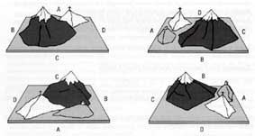

The preoperational stage ranges from about ages 2 to 7 (Piaget, 1951, 1952). Children in this stage can mentally represent events and objects (the semiotic function), and engage in symbolic play.
Their thoughts and communications are typically egocentric (i.e. about themselves).
Egocentrism refers to the child's inability to see a situation from another person's point of view. According to Piaget, the egocentric child assumes that other people see, hear, and feel exactly the same as the child does. Piaget wanted to find out at what age children decenter - i.e. become no longer egocentric.
Another key feature which children display during this stage is animism. Animism is the belief that inanimate objects (such as toys and teddy bears) have human feelings and intentions.
The Three Mountains Task
Jean Piaget used the three mountains task (see picture below) to test whether children were egocentric. Egocentric children assume that other people will see the same view of the three mountains as they do. According to Piaget, at age 7 thinking is no longer egocentric, as the child can see more than their own point of view.
Aim: Piaget and Inhelder (1956) wanted to find out at what age children decenter - i.e. become no longer egocentric.
Method: The child sits at a table, presented in front are three mountains. The mountains were different, with snow on top of one, a hut on another and a red cross on top of the other. The child was allowed to walk round the model, to look at it, then sit down at one side. A doll is then placed at various positions of the table.
The child is then shown 10 photographs of the mountains taken from different positions, and asked to indicate which showed the dolls view. Piaget assumed that if the child correctly picked out the card showing the doll's view, s/he was not egocentric. Egocentrism would be shown by the child who picked out the card showing the view s/he saw.
Findings - Four-year-olds always chose a picture which matched their own view, while six-year-olds showed some awareness of alternative perspectives. Only seven- and eight-year-olds consistently chose the correct picture.
Conclusion - At age 7, thinking is no longer egocentric as the child can see more than their own point of view.

Limitations in the
Child's Thinking
Piaget focused most of this description of this stage on limitations in the child's thinking, identifying a number of mental tasks which children seem unable to do. These include the inability to decentre, conserve, understand seriation (the inability to understand that objects can be organized into a logical series or order) and to carry out inclusion tasks.
Children in the preoperational stage are able to focus on only one aspect or dimension of problems. For example, suppose you arrange two rows of blocks in such a way that a row of 5 blocks is longer than a row of 7 blocks. Preoperational children can generally count the blocks in each row and tell you the number contained in each. However, if you ask which row has more, they will likely say that it is the one that makes the longer line, because they cannot simultaneously focus on both the length and the number. The ability to solve this and other "conservation" problems signals the transition to the next stage.
Conservation is the understanding that something stays the same in quantity even though its appearance changes. To be more technical, conservation is the ability to understand that redistributing material does not affect its mass, number or volume.
So, what do these tasks tell us about the limitations of preoperational thought in general?
Piaget drew a number of related conclusions:
Understanding of these situations is 'perception bound'. The child is drawn by changes in the appearance of the materials to conclude that a change has occurred.
Understanding of these situations is 'perception bound'. The child is drawn by changes in the appearance of the materials to conclude that a change has occurred.
Understanding of these situations is 'perception bound'. The child is drawn by changes in the appearance of the materials to conclude that a change has occurred.
Understanding of these situations is 'perception bound'. The child is drawn by changes in the appearance of the materials to conclude that a change has occurred.
Evaluation
Martin Hughes (1975) argued that the three mountains task did not make sense to children and was made more difficult because the children had to match the doll's view with a photograph.
Hughes devised a task which made sense to the child. He showed children a model comprising two intersecting walls, a 'boy' doll and a 'policeman' doll. He then placed the policeman doll in various positions and asked the child to hide the boy doll from the policeman.
Hughes did this to make sure that the child understood what was being asked of him, so if s/he made mistakes they were explained and the child tried again. Interestingly, very few mistakes were made.
The experiment then began. Hughes brought in a second policeman doll, and placed both dolls at the end of two walls, as shown in the illustration above.
The child was asked to hide the boy from both policemen, in other words he had to take account of two different points of view.
Hughes' sample comprised children between three and a half and five years of age, of whom 90 per cent gave correct answers. Even when he devised a more complex situation, with more walls and a third policeman, 90 per cent of four-year-olds were successful.
This shows that children have largely lost their egocentric thinking by four years of age, because they are able to take the view of another. Hughes' experiment allowed them to demonstrate this because the task made sense to the child, whereas Piaget's did not.